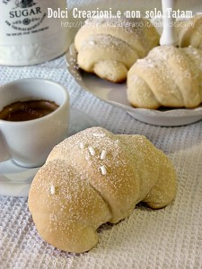

Cocktail analcolici: 16 ricette facili e sfiziose | Buttalapasta
Portate Aperitivi Insalate Antipasti Primi piatti Secondi piatti Piatti unici Contorni Sughi e salse Dolci Ingredienti Carne Pesce Verdure Uova Riso Pasta Legumi Cereali Frutta Di stagione Melone Ciliegie Peperoni Melanzane Ricette speciali Vegetariane Vegane Senza lattosio Senza glutine Link rapidi Ultime ricette Ricette light Ricette veloci Ricette facili Ricette Bimby Ricette al forno Piatti tipici Cucina regionale Cucina etnica Consigli di cucina Alimentazione sana Fare la spesa Prodotti tipici Prodotti di stagione Pulire gli alimenti Conservare gli alimenti Curiosità gastronomiche Menù Le migliori ricette Foto Seguici Le migliori ricette I 16 cocktail analcolici più famosi da fare a casa
I 16 cocktail analcolici più famosi da fare a casa
Freschi, colorati e gustosissimi: abbiamo raccolto per voi le ricette più sfiziose per preparare dei cocktail analcolici famosi con frutta da servire come aperitivo a casa con gli amici.
Di Anita Borriello | Lunedì 14 dicembre 2020
1 di 1
1 di 1
Foto Envato | 5PH
I cocktail sono le bevande più amate dai giovani e non solo. I cocktail analcolici non sono altro che una miscela proporzionata ed equilibrata di diversi ingredienti non alcolici e aromi. L’etimologia del termine non è chiara.
Possono essere di quattro tipi: pre dinner, after dinner, long drink e any time . I primi vengono serviti come aperitivi per stimolare l’appetito. Gli after dinner vengono serviti dopo cena per sostituire o accompagnare un dessert.
I long drinks sono dissetanti e caratterizzati dalla presenza di succhi di frutta e bevande gassate, spremute e centrifughe. Gli any time possono essere serviti in qualsiasi momento. Scopriamo insieme alcuni dei cocktail analcolici più popolari e deliziosi!
Sangria analcolica
Foto Shutterstock | Elena VeselovaIniziamo subito con una rassegna di cocktail famosi in versione analcolica, come la sangria, per esempio. Possiamo realizzarla con del succo di mela al posto del vino e impreziosirla con frutta e spezie profumate .
Mojito analcolico
Il mojito è uno dei cocktail più famosi e popolari al mondo. Per chi preferisce la versione light o non può bere alcolici, ecco il mojito analcolico . Rispetto alla ricetta tradizionale alcolica, c’è solo una sostituzione da fare: la lemonsoda prende il posto del rum bianco. È ancora più dissetante e rinfrescante di quello alcolico!
Spritz al melograno
Foto Shutterstock | yingkoLo spritz al melograno è uno dei cocktail analcolici immancabili della stagione autunnale. Il melograno è molto nutriente e salutare poiché contrasta i radicali liberi e favorisce l’eliminazione delle tossine. La preparazione di questa bevanda è davvero facile… provare per credere!
Cocktail al melograno
Leggermente differente dalla ricetta proposta sopra per la presenza di un ingrediente particolarissimo: l’ acqua di rose .
Cocktail alle carote
Il cocktail alle carote è dissetante e nutriente. Questa bevanda analcolica a base di carote, lime e menta è ricca di vitamina A e vitamina C. È ideale come aperitivo leggero o anche come bevanda dissetante durante il periodo estivo.
Cocktail al succo d’arancia
Un altro cocktail analcolico estivo e rinfrescante è quello al succo d’arancia. La versione alcolica prevede l’aggiunta di gin, ma per chi preferisce quella light questa bevanda è davvero ottima e buonissima. È una ricetta evergreen utile tutto l’anno per piccoli e grandi.
Cocktail alla zucca
Foto Shutterstock | Elena VeselovaIl cocktail analcolico alla zucca è tipico del periodo più spaventoso e pauroso dell’anno, Halloween . I bambini ne vanno pazzi. Per questa bevanda prelevate la polpa delle zucche intagliate che sarà utile per ornamento o quello che rimane dopo aver preparato altre ricette a base di zucca.
Cocktail al pompelmo e zenzero
Il cocktail analcolico al pompelmo e zenzero è facilissimo da preparare ed è molto dissetante. Rappresenta una delle bevande ideali per accompagnare dolcetti alla frutta fresca. Un cocktail molto richiesto in disco e in spiaggia durante il periodo estivo.
Punch di ananas e zenzero
Uno dei cocktail analcolici più in voga durante l’estate è quello all’ananas e zenzero. Una bevanda dissetante dal gusto piacevole e non banale. È perfetta per un buffet di compleanno o per un aperitivo con gli amici . La ricetta è davvero semplice e veloce.
Drink al limone
Foto Envato | 5PHUno dei cocktail analcolici classici ed evergreen è quello al limone . Un aperitivo delizioso e buonissimo che piace a piccoli e grandi. Ideale per tutte le stagioni e per ogni tipo di festa. Limone, succo d’arancia e sciroppo di granatina per una bevanda nutriente e dissetante.
Cocktail ananas e menta
Facilissimo da realizzare: il cocktail analcolico ananas e menta è perfetto per essere servito durante un aperitivo. La preparazione è facile e veloce, e si utilizzano succo di arance e polpa di ananas.
Aperitivo mimosa
Colore e sapore intensi per un cocktail fresco e gustoso . Drink fresco e leggero che viene realizzato in tante varianti, compresa la versione alcolica a base di spumante e succo d’arancia.
Cocktail analcolico arance e fragole
Foto Envato | nblxerDrink sfizioso e particolare che possiamo servire anche a bambini e ragazzi perché totalmente analcolico. Il sapore delle fragole si sposa alla perfezione con quello delle arance per dare vita a un aperitivo originale e gustosissimo .
Aperitivo al pomodoro
Cocktail sfizioso a base di pomodoro e spezie piccanti. È infatti composto da tabasco, pepe e salsa Worcester .
Cocktail di verdure
Si prepara in pochissimo tempo e possiamo servirlo ai nostri amici con degli stuzzichini e snack salutar i. Per realizzare questo cocktail analcolico avrete bisogno di sedano, pomodoro, carote e limone. Si tratta di un super concentrato di vitamine sfizioso e buonissimo.
Cocktail detox
Delizioso come aperitivo analcolico, ma perfetto anche appena ci si alza al mattino. La ricetta proposta è per realizzare un drink analcolico pensato appositamente per depurare il nostro organismo e fare il pieno di vitamina C.
TI POTREBBERO INTERESSARE ANCHE:
Foto Shutterstock | ShebekoIdee Aperitivo: ricette cocktail e stuzzichini
24 ricette per snack e stuzzichini salati
Finger Food: 50 ricette facili per antipasti e aperitivi
1 di 1
Pagina iniziale1 di 1
Parole di Anita Borriello
Appassionata di libri e computer: unisce l'amore per entrambi studiando Informatica Umanistica presso l'Università di Pisa. Lavora dal 2003 come Redattrice e Copywriter scrivendo testi per numerose testate online. Lettura, scrittura e tiro con l'arco sono le sue più grandi passioni.
In primo pianoCasaBaio
CasaBaio: la ricetta veloce del gazpacho andaluso
Secondi Piatti
Spiedo di pesce di lago
Antipasti
Bruschette estive
Potrebbe interessartiLe migliori ricette
Salsa per l'arrosto
Per accompagnare il vostro arrosto provate questa salsina preparata appositamente, senza dover per forza utilizzare quello che rimane dopo la cottura dell’arrosto .
Le migliori ricette
Salmone affumicato con avocado in salsa di soia e lime
Un’altra delle ricette con avanzi da fare oggi è il salmone affumicato con avocado in salsa di soia e lime, per antipasti deliziosi da preparare per
Le migliori ricette
Biscotti senza zucchero per diabetici
Vi proponiamo la ricetta per dei semplicissimi ma gustosi biscotti dietetici senza zucchero ottimi soprattutto per chi ha problemi di diabete e deve tenere
Le migliori ricette
Torta di mele per diabetici
La ricetta della torta di mele per diabetici è la versione light della torta di mele classica, adatta ai diabetici e a tutti coloro che devono tenere sotto
Le migliori ricette
Quinoa ricette: 20 piatti facili e sfiziosi con i segreti per cucinarli alla perfezione
Scopriamo le migliori ricette per cucinare la quinoa in modo sfizioso facendole perdere il caratteristico sapore amaro. Possiamo farla all'insalata, con le
Le migliori ricette
Straccetti di pollo
Gli straccetti di pollo sono un secondo leggero e veloce da preparare, anche per coloro che non hanno molta esperienza ai fornelli. Gli ingredienti necessari
Contatti Via Tata Giovanni, 8 00154 Roma (RM) P.I. 12658471003 N° reg. REA RM-1391919 Pagina contatti Chi siamo Archivi News Archivi articoli Categorie di Buttalapasta Ultime notizie Risorse Collabora Pubblicità Privacy Preferenze privacy SeguiciSocial Network
© 2005-2021 Deva Connection s.r.l - Tutti i diritti riservati.
Buttalapasta, supplemento alla testata giornalistica NanoPress.it registrata presso il Tribunale di Roma n° 2 del 16 gennaio 2020.